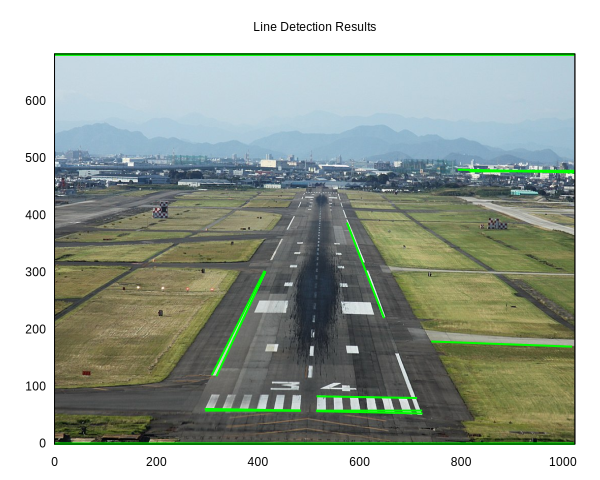

Day 22: Clearing the Runway
The North Pole Workshop’s logistics department has been busy this year with upgrading the sleigh’s dash-cam with a new more powerful computer. They’ve asked the research and development department if there is anything that can be done with the extra cycles to make the journey safer. After bouncing around a couple ideas, they came up with a plan for an autoland system…but since Santa and the reindeer do not operate in typical environments (such as roofs), this would not be a typical autoland system (which use microwave/radio guidance) so they couldn’t select anything off-the-shelf (and they do know their shelves).
To help iterate over the requirements for this new system, the elves knew that PDL could help them process images and try different approaches quickly. This iterative process will start with simpler scenarios in order to ensure the algorithms are on the right track. We’ll start with an airport runway as a test image.
Setup
First we need to setup the environment to do everything we need: read
images, processing them with some filters, and then plot the results.
Since image processing requires frequent visualisation, this work is
being done in Jupyter Notebook via
Devel::IPerl, but the setup below
allows for display of plots both in a notebook, but also as a regular
Perl script. You can download the notebook
here.
use v5.36;
use utf8;
use feature qw(signatures postderef);
use constant IN_IPERL => !! $ENV{PERL_IPERL_RUNNING};
no if IN_IPERL, warnings => 'redefine'; # fewer messages when re-running cells
no if ! IN_IPERL, warnings => 'void'; # fewer messages for variable at end of cell outside of IPerl
use PDL 2.095;
use PDL::Constants qw(PI);
use PDL::IO::Pic;
use PDL::Image2D;
use PDL::ImageRGB;
use SVG;
use MooX::Struct ();
use Path::Tiny qw(path);
use List::Util ();
use Encode qw(encode_utf8);
use Data::Printer;
use Data::Printer::Filter::PDL ();
use PDL::Graphics::Gnuplot qw(gpwin);
# Make PDL::Graphics::Gnuplot compatible with IPerl
use if IN_IPERL, 'Devel::IPerl::Plugin::PDLGraphicsGnuplot';
if( IN_IPERL ) {
IPerl->load_plugin('PDLGraphicsGnuplot');
}
sub PDL::Graphics::Gnuplot::fancy_display {
if(IN_IPERL){
IPerl->display($_[0]);
} else {
#sleep 1; $_[0]->close;
$_[0]->pause_until_close;
}
}
my $gp = gpwin();
Image processing for feature extraction
The elves know that runways are characterized by strong straight lines: the edges of the runway, centerline markings, and threshold stripes. If they can reliably detect these lines in images from the sleigh’s camera, they’ll have a key piece of their autoland system.
But how do you find straight lines in an image? Let’s break this down into steps:
First, we need to find places in the image where there are sharp changes in brightness — these are edges that might be part of the lines we’re looking for:

But just having edge points isn’t enough - we need to figure out which ones form straight lines. This is tricky because:
- edges might be broken (gaps in runway lines);
- there’s usually noise (not all edges are runway lines); and
- lines might be partial (only part of the runway visible).
This is where the Hough transform comes in. Instead of trying to connect edge points directly, it:
- Takes each edge point.
- Finds all possible lines through that point.
- Lets the points “vote” on which lines they might be part of.
- Finds the lines that got the most votes.
The rest of this notebook shows how we implement this pipeline using PDL, step by step.
Prepare image
After selecting a test image
(Runway
34, Nagoya Airfield, by Kentaro Iemoto from Tokyo, Japan,
CC BY-SA
2.0, via Wikimedia Commons), we need to read it in using rpic()
and take a look at the dimensions.
.jpg){kind=link}
# https://commons.wikimedia.org/wiki/File:Runway_34,_Nagoya_Airfield_(3937428018).jpg
my $runway = rpic('Runway_34,_Nagoya_Airfield_(3937428018).jpg');
say np $runway;
PDL {
Data : too long to print
Type : unsigned char
Shape : [3 1024 683]
Nelem : 2098176
Min : 0
Max : 255
Badflag : No
Has Bads : No
}
and then view the image in Gnuplot:
$gp->image( $runway );
$gp->fancy_display;
Note the dimensions are [3 W H] where 3 is the number of channels, W
is the width (x-extent), and H is the height (y-extent).
We can’t process the color channels in the image directly, so we need to
convert it to a single greyscale (luminance) channel. We can use
rgbtogr which uses a standard formula.
my $grey = rgbtogr($runway)->double / 255;
$gp->image($grey,
{ title => 'Greyscale image',
clut => 'grey' });
$gp->fancy_display;

Gaussian blur
We need to find edges in the image, but all real-world images have some amount of noise (e.g., from random variation in brightness from pixel to pixel). This noise can interfere with further processing such as edge detection such that the noise may be picked up as spurious edges.
To smooth out this noise, we apply a 2D Gaussian filter to the image. The filter:
- Looks at each pixel and its neighbors.
- Creates a weighted average where:
- The center pixel counts most;
- Nearby pixels count less;
- Far pixels barely count at all;
- The weights follow a bell curve (Gaussian) shape.
The parameter σ (sigma) controls how much smoothing we do:
- Small σ: less smoothing, keeps more detail.
- Large σ: more smoothing, might blur real edges.
The way we can perform this weighted average is by performing
convolution with the conv2d() function.
Implementation note: The 2D isotropic Gaussian is a separable filter, which means that

can be written as the product of two 1D Gaussians:
This lets us compute 1D Gaussian values and use this to create the 2D
Gaussian values for the kernel, which is much more efficient than
computing the full 2D function directly (though the kernel is typically
small). It is also possible to use two consecutive conv1d() calls
here, but we’ll skip that for now.
Note that the above formulae are written without the normalisation factor. Here we approximate the normalisation factor by dividing by the sum.
See more at:
- R. Fisher, S. Perkins, A. Walker, and E. Wolfart, Spatial Filters - Gaussian Smoothing. “Hypermedia Image Processing Reference (HIPR)”, 2003.
- Gaussian function - Wikipedia.
sub gaussian_kernel( $sigma = 1.0 ) {
die 'sigma must be positive' unless $sigma > 0;
my $GAUSSIAN_CUTOFF = 3; # Standard deviations from center (±3σ)
# Kernel size: Ensure it's odd for symmetry around the center pixel
# Total width = 2 * 3σ + 1.
my $size = pdl(2 * ceil($GAUSSIAN_CUTOFF * $sigma) + 1)->sclr;
# Create 1D Gaussian values centered at 0
# using symmetric x-coordinates.
my $x = xvals($size) - ($size-1)/2;
my $gauss_1d = exp(-($x**2)/(2 * $sigma**2));
# Create 2D kernel using outer product
my $kernel = $gauss_1d->outer($gauss_1d);
$kernel /= $kernel->sum; # normalise
return $kernel;
}
sub gaussian_blur($img, $sigma = 1) {
return conv2d($img, gaussian_kernel($sigma));
}
Test Gaussian blur on a point source
We can see how this works by testing on a simple “point source” image — a single bright pixel surrounded by darkness:
# Create a point source.
my $point = zeroes(21,21);
$point->set(10,10, 1);
my $point_blurred = gaussian_blur($point, 1);
$gp->image($point_blurred,
{ title => encode_utf8('Gaussian Blur of Point Source (σ=1)'),
clut => 'grey', },
);
$gp->fancy_display;

We can see this took the single point and “spread out” its intensity in
a radial manner. Furthermore, $point_blurred continues to sum up to 1
which means that brightness is preserved due to the normalisation
factor.
say "Σ p = ", $point_blurred->sum->sclr;
Σ p = 1
Use Gaussian blur on image
We can now apply the Gaussian blur filter to the runway image.
my $blurred = gaussian_blur($grey, 2);
$gp->image($blurred,
{ title => encode_utf8('Gaussian Blur (σ=2)'),
clut => 'grey', },
);
$gp->fancy_display;

Sobel edge detection
Now that we’ve smoothed out the noise, we can look for edges. But what exactly is an edge in an image? An edge occurs where there’s a sharp change in brightness — like the transition from the dark runway surface to the bright markings.
Mathematically, these changes in brightness are derivatives: how quickly is the brightness changing as we move across the image? The Sobel operator helps us find these changes by looking at how brightness differs between neighboring pixels in both horizontal (x) and vertical (y) directions.
Implementation note: The Sobel operator uses two 3×3 kernels:
For horizontal changes (x-direction):

For vertical changes (y-direction):

We calculate both directions and combine them to get the total edge strength:
strength² = (horizontal change)² + (vertical change)²
The factor of ⅛ normalizes the kernels so the maximum response to a perfect edge is 1.
Note: We store strength² directly rather than taking its square root since:
- We only care about relative strengths.
- Avoiding the square root is more efficient.
- The threshold comparison will still work the same.
See more at:
We can threshold this strength to get a binary edge image: pixels where the strength is above some threshold become 1 (edge), and others become 0 (non-edge). The threshold is chosen relative to the average edge strength in the image — this helps it adapt to different images automatically.
Note: Often further post-processing of the edge detection result is done such as thinning which can help create more clear edges without spurious points, but we won’t do that here.
sub sobel_operator($img) {
# Define Sobel kernel and normalise it
my $kx = pdl([
[-1, 0, 1],
[-2, 0, 2],
[-1, 0, 1],
]);
$kx /= $kx->abs->sum;
# Stack x and y kernels
my $k = cat($kx, $kx->transpose);
# Add dummy dimension to image for conv2d
my $img_3d = $img->dummy(-1);
# Single convolution and magnitude calculation.
# Returns strength² (no sqrt).
return conv2d($img_3d, $k)->mv(-1,0)->pow(2)->sumover;
}
sub default_edge_threshold($strength2) {
my $mean_strength2 = $strength2->avg;
my $thresh2 = 4 * $mean_strength2;
return $strength2 > $thresh2;
}
sub sobel_edges($img) {
return default_edge_threshold(sobel_operator($img));
}
Test Sobel edge detection on point source
First, let’s see how edge detection works on our point source test image. This is useful because:
- We know exactly what the input looks like (single bright pixel)
- The edges should appear where brightness changes most rapidly
- With a single point, we expect to see edges form a simple pattern
# Test sobel_edges on point source
my $point_edges = sobel_edges($point);
$gp->image($point_edges,
{ title => 'Sobel Edges of Point Source',
clut => 'grey', },
);
$gp->fancy_display;
The result shows edges right next to the original point — this makes sense because that’s where the brightness changes most sharply.
Use Sobel edge detection on image
Now let’s apply edge detection directly to our blurred runway image:
my $binary_edges = sobel_edges($blurred);
$gp->image($binary_edges,
{ title => 'Sobel Edges Binarised',
clut => 'grey', },
);
$gp->fancy_display;
Looking at the result:
- Strong edges appear along the runway boundaries.
- The runway markings create clear edges.
These edge points are what we’ll use for line detection, but we still have a challenge: how do we figure out which edge points belong to the same straight line? We could try to trace along contiguous pixels, but this can not deal with the less well-defined edges (e.g., broken disconnected edges due to shadows).
That’s where the Hough transform comes in.
Hough transform
As mentioned earlier, the Hough transform works by using points in the image to “vote” for which line they are in. Well, technically, the Hough transform is more general in that it can be used for any model to match against as long as you have a valid parameterisation of the model in the image space.
There are widely used parameterisations for lines and circles. We’ll be using the line parameterisation because we are looking for lines.
Define line parameterisation
What do we mean by parameterisation? It’s just a fancy way of saying
what variables do you need to define a shape. For example, a 2D line
segment needs four parameters
. Similarly,
a 2D line can be parameterised using a slope-intercept
form
with the two
parameters  and
and
 .
.
We’re looking for lines, so that could work, but it has issues when
dealing with vertical or nearly vertical lines. Our parameter range for
would have to be very large in
those cases. An alternative parameterisation is Hesse normal
form which for a 2D
line follows the equation
where given a target
line,  is the shortest
distance between that line and the origin and
is the angle between the
axis and a line of length
that intersects the
target line. Maybe that’s easier to see with a picture:
is the shortest
distance between that line and the origin and
is the angle between the
axis and a line of length
that intersects the
target line. Maybe that’s easier to see with a picture:
This diagram uses the top-left as the origin as is common with image processing code. For a fixed θ, different values of ρ represent parallel lines (note that ρ can be negative). Values of θ can range from -π/2 to π/2 which allows for parametrising all possible lines including vertical and horizontal lines.
We can implement an object to hold all this information in a single place. By default, the parameter space is discretised to ~1 pixel resolution in ρ and 1° resolution in θ.
use MooX::Struct -retain, HoughParameters => [
# Rho parameters
rho_range => [ required => 1 ],
num_rho => [ required => 1 ],
# Theta parameters
theta_range => [ required => 1 ],
num_theta => [ required => 1 ],
# Lazy builders for actual parameter values
rho_res => [ builder => '_build_rho_res' ],
theta_res => [ builder => '_build_theta_res' ],
rhos => [ builder => '_build_rhos' ],
thetas => [ builder => '_build_thetas' ],
_build_rho_res => sub {
my $self = shift;
my ($min, $max) = @{$self->rho_range};
($max - $min) / ($self->num_rho - 1);
},
_build_theta_res => sub {
my $self = shift;
my ($min, $max) = @{$self->theta_range};
($max - $min) / ($self->num_theta - 1);
},
_build_rhos => sub {
my $self = shift;
sequence($self->num_rho)->xlinvals(@{$self->rho_range});
},
_build_thetas => sub {
my $self = shift;
sequence($self->num_theta)->xlinvals(@{$self->theta_range});
},
# Class method for default parameters from image
from_image => sub {
my ($class, $img, %rest) = @_;
my $max_rho = $img->shape->magnover;
return $class->new(
rho_range => [-$max_rho, $max_rho],
num_rho => int(2 * $max_rho), # ~1 pixel resolution
theta_range => [-PI/2, PI/2],
num_theta => 180, # ~1 degree resolution
%rest,
);
},
];
Build the Hough space accumulator
The voting procedure works by varying θ and finding the ρ for a line
that a given edge point would be part of. These are then accumulated
into a 2D ndarray using histogram2d() which places the votes in the
appropriate bin for each parameter.
This accumulator is also known as the Hough space.
sub line_hough($binary_edges, $params) {
# Create accumulator array
my $accumulator = zeroes($params->num_rho, $params->num_theta);
# Find edge points and convert to 2D matrix of [x y] coordinates
# shape [2,N].
my $edge_points = whichND($binary_edges);
say '[INFO] ', "Processing ", $edge_points->dim(1), " edge points";
# Create transformation matrix [180,2]
# for [x,y] coordinate order
my $transform = cat(
cos($params->thetas), # for x
sin($params->thetas), # for y
);
# Calculate ρ = edge_points × transform giving [180,N]
my $rho = $edge_points x $transform;
# Scale rho values to accumulator indices using params values
my $rho_min = $params->rho_range->[0];
my $rho_max = $params->rho_range->[1];
my $rho_scale = ($params->num_rho - 1) / ($rho_max - $rho_min);
my $rho_idx = ($rho - $rho_min) * $rho_scale;
# Create theta indices [180,N] where each row is 0..179
my $theta_idx = zeros($params->num_theta, $rho_idx->dim(1));
$theta_idx += sequence($params->num_theta);
# Filter valid rho indices
my $valid = ($rho_idx >= 0) & ($rho_idx < $params->num_rho);
$rho_idx = $rho_idx->where($valid);
$theta_idx = $theta_idx->where($valid);
# Use histogram2d to accumulate votes
$accumulator = histogram2d($rho_idx, $theta_idx,
1, 0, $params->num_rho,
1, 0, $params->num_theta);
return $accumulator;
}
Find lines (peaks) in the Hough space
A maximum in the Hough space represents a line where many edge points
participate and those edge points are thus likely collinear. The
following looks for those peaks iteratively, but suppresses neighbouring
values (which represent nearby lines) so that they are not detected as
peaks in later iterations. The range() function is the perfect tool
for extracting out a neighbourhood and modifying it. However, be careful
that you use sever() so that you don’t accidentally end up zeroing out
the peak value!
sub find_lines($accumulator, $params, $threshold_ratio=0.3, $nhood_size=[5,5], $max_peaks=20) {
# Pre-allocate peaks array
my $peak_indices = zeroes(2, $max_peaks); # [rho_idx, theta_idx] × max_peaks
my $peak_values = zeroes($max_peaks);
my $num_peaks = 0;
# Calculate deltas for neighbourhood
my $rho_theta_delta = pdl(@$nhood_size);
# Initialize working copy and get flattened view.
my $H = $accumulator->copy;
my $H_flat = $H->clump(-1);
my $threshold = $H_flat->index(maximum_ind($H_flat)) * $threshold_ratio;
while ($num_peaks < $max_peaks) {
# Find peak location and value using maximum_ind
my $max_ind = maximum_ind($H_flat);
my $max_val = $H_flat->index($max_ind)->sever;
last if $max_val < $threshold;
my $peak_idx = pdl(one2nd($H, $max_ind));
# Record peak
$peak_indices->slice(":,$num_peaks") .= $peak_idx;
$peak_values->index($num_peaks) .= $max_val;
$num_peaks++;
# Suppress neighbourhood using range.
# Adjust center point back by half the neighbourhood size.
my $corner = $peak_idx - $rho_theta_delta/2;
my $r = $H->range($corner, $rho_theta_delta, 't');
$r .= 0;
}
# Truncate results if fewer peaks found
if ($num_peaks < $max_peaks) {
$peak_indices = $peak_indices->slice(':,0:' . ($num_peaks-1));
$peak_values = $peak_values->slice('0:' . ($num_peaks-1));
}
# Create parameter space values directly
my $peak_params = cat(
$params->rhos->index($peak_indices->using(0)),
$params->thetas->index($peak_indices->using(1)),
);
return ($peak_params, $peak_values);
}
Extract lines from peaks
Then using these peaks, we transform back from the Hough space to the
binary edge image space in order to find the edge points that
participate in that line. These segments might be disconnected, so there
is some tolerance for that in the $fillgap parameter.
sub extract_line_segments($edges, $peak_params, $fillgap=20, $minlength=40) {
my ($width, $height) = $edges->dims;
# Find all edge points in image as [2,N] array of [x,y] coordinates
my $edge_points = whichND($edges);
# Get parameters for each line from [N,2] array
my $rhos = $peak_params->slice(':,(0)');
my $thetas = $peak_params->slice(':,(1)');
my @all_segments;
my $delta_rho = 0.5; # Half-pixel tolerance
for my $i (0..$rhos->nelem-1) {
my $rho = $rhos->at($i);
my $theta = $thetas->at($i);
# Project points onto normal direction (cos θ, sin θ) for [x,y] coordinates
my $normal_proj = pdl([cos($theta), sin($theta)]);
my $rho_all = inner($edge_points, $normal_proj);
# Find points belonging to this line
my $points_idx = which(abs($rho_all - $rho) <= $delta_rho);
next unless $points_idx->nelem >= 2;
# Get coordinates of line points, maintaining [2,N] structure
my $points = $edge_points->slice([],$points_idx);
# Calculate spans using minmaximum
my $spans = pdl((minmaximum($points->xchg(-1,0)))[0,1])->xchg(0,-1)->diff2->squeeze;
# Sort based on dominant direction
my $sort_idx = $spans->at(0) > $spans->at(1)
# More horizontal - sort by x, then y
? qsorti($points->slice('(0)') * $height + $points->slice('(1)'))
# More vertical - sort by y, then x
: qsorti($points->slice('(1)') * $width + $points->slice('(0)'));
$points = $points->slice([],$sort_idx);
# Find gaps using point-to-point distances
my $diffs = $points->xchg(0,1)->diff2->xchg(0,1);
my $gap_idx = which($diffs->magnover > $fillgap);
# Create segment bounds - [2,N] array where dimension 0 is [start,end]
my $seg_bounds = zeroes(2, $gap_idx->nelem + 1);
# Handle segment bounds based on gaps
if ($gap_idx->nelem) {
$seg_bounds .= cat(
pdl(0)->append($gap_idx + 1),
$gap_idx->append($points->dim(1) - 1)
)->transpose;
} else {
$seg_bounds .= pdl([0, $points->dim(1) - 1]);
}
# Process each segment
for my $j (0..$seg_bounds->dim(1)-1) {
my $endpoints = $points->slice([],$seg_bounds->slice(",($j)"));
my $length = $endpoints->xchg(0,1)->diff2->xchg(0,1)->magnover->sclr;
next unless $length >= $minlength;
push @all_segments, {
point1 => $endpoints->slice(',(0)')->unpdl,
point2 => $endpoints->slice(',(1)')->unpdl,
rho => $rho,
theta => $theta,
length => $length,
dominant_axis => $spans->at(0) > $spans->at(1) ? 'x' : 'y',
};
}
}
return \@all_segments;
}
Pipeline
Now let’s put this all together and take a look at what this looks like.
Test pattern
First to ensure that various parts of this algorithm are working, let’s go even simpler and create a synthetic test image that only contains various lines which are guaranteed to be edges.
An easy way to do this is to create a vector image using SVG and then render it to a raster image.
sub create_test_pattern($width=400, $height=400) {
# Create SVG object
my $svg = SVG->new(
width => $width,
height => $height,
);
# White background
$svg->rectangle(
x => 0,
y => 0,
width => $width,
height => $height,
fill => 'white'
);
# Create group for all lines with common style
my $lines = $svg->group(
style => {
stroke => 'black',
'stroke-width' => 2
}
);
# Complete test lines
$lines->line(x1 => 50, y1 => 50, x2 => 350, y2 => 50); # Horizontal
$lines->line(x1 => 350, y1 => 50, x2 => 350, y2 => 350); # Vertical
$lines->line(x1 => 50, y1 => 50, x2 => 350, y2 => 350); # 45 degrees
# Standalone edges and partial segments
$lines->line(x1 => 50, y1 => 150, x2 => 150, y2 => 150); # Broken horizontal 1
$lines->line(x1 => 200, y1 => 150, x2 => 300, y2 => 150); # Broken horizontal 2
$lines->line(x1 => 250, y1 => 200, x2 => 300, y2 => 230); # Short diagonal
$lines->line(x1 => 280, y1 => 280, x2 => 320, y2 => 280); # Isolated short
# Merge test cases
# Nearly parallel vertical lines
$lines->line(x1 => 100, y1 => 200, x2 => 100, y2 => 350);
$lines->line(x1 => 102, y1 => 200, x2 => 102, y2 => 350);
# Slightly diverging lines
$lines->line(x1 => 150, y1 => 200, x2 => 180, y2 => 350);
$lines->line(x1 => 155, y1 => 200, x2 => 190, y2 => 350);
# Closely spaced parallel horizontal segments
$lines->line(x1 => 200, y1 => 200, x2 => 300, y2 => 200);
$lines->line(x1 => 200, y1 => 203, x2 => 300, y2 => 203);
# Nearly coincident short segments
$lines->line(x1 => 250, y1 => 100, x2 => 300, y2 => 120);
$lines->line(x1 => 251, y1 => 101, x2 => 301, y2 => 121);
# Create temporary files using Path::Tiny
my $svg_file = Path::Tiny->tempfile(SUFFIX => '.svg');
my $png_file = Path::Tiny->tempfile(SUFFIX => '.png');
# Save SVG
$svg_file->spew_utf8($svg->xmlify);
# Convert to PNG using full path strings
system('convert', '-density', '150', $svg_file->absolute, $png_file->absolute) == 0
or die "ImageMagick convert failed: $!";
# Read PNG into PDL
my $img = rpic("$png_file");
# Binary (edge = 1, background = 0)
my $binary = $img->double / 255 < 0.5;
return $binary;
}
This looks like:
my $binary_test_image = create_test_pattern();
$gp->image($binary_test_image,
{ title => 'Test pattern',
clut => 'grey', },
);
$gp->fancy_display;
Now let’s visualise the various parts of this algorithm.
First, lets create a function that let’s us see what the Hough space looks like and optionally where the peaks are.
sub plot_hough_space($gp, $hough_space, $params, $peak_params=undef, $nhood_size=[15,15], $title='Hough Transform Space [ log(H + 1) ]') {
my $log_H = log($hough_space + 1);
# Base plot remains the same
my @plot_items = (
{
title => $title,
ylabel => encode_utf8('ρ (pixels)'), # rho
xlabel => encode_utf8('θ (radians)'), # theta
clut => 'sepia',
xtics => {
labels => [
map { [ encode_utf8($_->[0]), $_->[1] ] }
['-π/2' , -PI/2],
['-π/4' , -PI/4],
[ '0' , 0 ],
[ 'π/4' , PI/4],
[ 'π/2' , PI/2],
],
},
},
with => 'image',
$params->thetas->dummy(0, $params->num_rho),
$params->rhos->dummy(1, $params->num_theta),
$log_H,
);
# Add rectangles around peaks if provided
if (defined $peak_params) {
my $drho = $params->rho_res * $nhood_size->[0]/2;
my $dtheta = $params->theta_res * $nhood_size->[1]/2;
for my $i (0..$peak_params->dim(0)-1) {
my $theta = $peak_params->slice("($i),1")->sclr;
my $rho = $peak_params->slice("($i),0")->sclr;
my $rect = make_rectangle($theta, $rho, 2*$dtheta, 2*$drho);
$rect->slice('(0)')->inplace->clip($params->theta_range->@*);
$rect->slice('(1)')->inplace->clip($params->rho_range->@*);
push @plot_items, (
{ with => 'lines',
lc => 'rgb "#FFFFFF"', # white lines
dt => '1',
},
$rect->using(0,1)
);
}
}
$gp->plot(@plot_items);
}
sub make_rectangle($x0, $y0, $width, $height) {
# Create rectangle coordinates (5 points to close the box)
return pdl([
[$x0-$width/2, $y0-$height/2],
[$x0+$width/2, $y0-$height/2],
[$x0+$width/2, $y0+$height/2],
[$x0-$width/2, $y0+$height/2],
[$x0-$width/2, $y0-$height/2], # close the rectangle
]);
}
And we absolutely need to see the image with the detected lines overlaid.
sub plot_detected_lines($gp, $orig_img, $segments, $title='Line Detection Results') {
$gp->plot(
{
title => $title,
key => 'off',
},
{ with => 'image' }, $orig_img,
( map {
(
{ with => 'lines',
lc => 'rgb "#00FF00"', # green color
dt => 1, # solid
lw => 2, }, # thicker lines
pdl($_->{point1}[0], $_->{point2}[0]), # x coordinates
pdl($_->{point1}[1], $_->{point2}[1]), # y coordinates
)
} @$segments ),
);
}
And a helper function to orchestrate the whole process of the Hough transform, peak finding, and line segment extraction.
sub visualise_hough_transform($gp, $orig_img, $binary_edges, $params, %opts) {
my $max_rho = $params->rho_range->[1];
my %defaults = (
threshold_ratio => 0.3,
nhood_size => [15,15],
max_peaks => 20,
fillgap => 50,
minlength => int($max_rho * 0.2), # 20% of max possible line length
);
%opts = (%defaults, %opts);
# Run Hough transform
my $hough_space = line_hough($binary_edges, $params);
# Find peaks
my ($peak_params, $peak_values) = find_lines($hough_space,
$params,
$opts{threshold_ratio},
$opts{nhood_size},
$opts{max_peaks});
plot_hough_space($gp, $hough_space, $params, $peak_params, $opts{nhood_size});
$gp->fancy_display;
# Extract line segments
my $segments = extract_line_segments($binary_edges, $peak_params,
$opts{fillgap}, $opts{minlength});
# Visualize detected segments
plot_detected_lines($gp, $orig_img, $segments);
$gp->fancy_display;
return ($hough_space, $peak_params, $segments);
}
Hough line feature extraction visualised
do {
# For test pattern
my $test_img = create_test_pattern();
my $test_params = HoughParameters->from_image($test_img);
my ($test_hough, $test_peaks, $test_segments)
= visualise_hough_transform($gp, $test_img, $test_img, $test_params,
nhood_size => [100,100],
fillgap => 10,
);
};


[INFO] Processing 4446 edge points
Here we see that some of the lines in the test image that are nearby each other are not considered a separate edge. This is a consequence of multiple parts of the algorithm resolution, delta rho tolerance, and neighbourhood suppression. Shorter lines are not picked up because the minimum length parameter.
Vertical and horizontal line segments are found, but do not extend the full length of the image elements.
And finally for the runway image:
do {
# For runway image
my $params = HoughParameters->from_image($binary_edges);
my ($hough, $peaks, $segments)
= visualise_hough_transform($gp, $runway, $binary_edges, $params,
threshold_ratio => 0.1,
nhood_size => [30,30],
max_peaks => 50,
fillgap => 20,
minlength => 150,
);
};


[INFO] Processing 40034 edge points
Line segments in both a more vertical direction and a more horizontal direction are found. There are some curious line segments that extend the full length of the top and bottom of the image. These could be filtered out using a region of interest (ROI) filter (i.e., essentially a mask) as it is likely that edges near the border of the image do not represent objects.
What now?
With this, the elves were satisfied with their progress on the autoland system…for now. But there are so many more things to explore. PDL let them quickly process and visualise an algorithm, making it easy to iterate on their design. For the next iteration they could swap out one edge detection algorithm for another, come up with custom ways of processing and post-processing the image, implement more robust line segment extraction, or use a probabilistic approach to quickly extract more complex objects (especially those to avoid).
Runway 34, Nagoya Airfield, by Kentaro Iemoto from Tokyo, Japan, CC BY-SA 2.0, via Wikimedia Commons

Zaki Mughal
Zaki Mughal has been using Perl and PDL for computational science for quite a while. He got hooked on the power of PDL when implementing a geometry algorithm and finding that a single statement could do what other numerical array processing tools would take several lines to do, so quickly ended up contributing to PDL itself. He has a background in biomedical engineering and computer science specifically working in various biomedical-related domains using image analysis, machine learning, and knowledge graph techniques. You can find him blogging at https://enetdown.org/ or as "sivoais" on IRC.